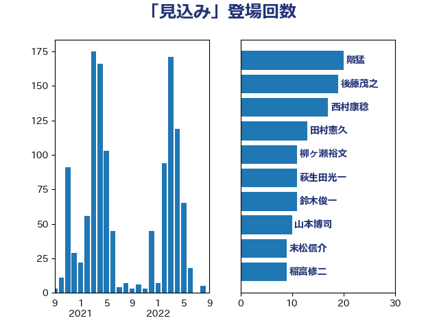

単語「見込み」

| 階猛 | 立憲民主党 | 20 回 |
| 後藤茂之 | 自由民主党 | 19 回 |
| 西村康稔 | 自由民主党 | 17 回 |
| 田村憲久 | 自由民主党 | 13 回 |
| 柳ヶ瀬裕文 | 日本維新の会 | 11 回 |
| 萩生田光一 | 自由民主党 | 11 回 |
| 鈴木俊一 | 自由民主党 | 11 回 |
| 山本博司 | 公明党 | 10 回 |
| 末松信介 | 自由民主党 | 9 回 |
| 稲富修二 | 立憲民主党 | 9 回 |
| 野上浩太郎 | 自由民主党 | 9 回 |
| 岸田文雄 | 自由民主党 | 8 回 |
| 石川香織 | 立憲民主党 | 8 回 |
| 菅義偉 | 自由民主党 | 8 回 |
| 岸真紀子 | 立憲民主党 | 7 回 |
| 平木大作 | 公明党 | 7 回 |
| 斉藤鉄夫 | 公明党 | 7 回 |
| 杉尾秀哉 | 立憲民主党 | 7 回 |
| 武田良太 | 自由民主党 | 7 回 |
| 赤羽一嘉 | 公明党 | 7 回 |
| 金子恭之 | 自由民主党 | 7 回 |
| 倉林明子 | 日本共産党 | 6 回 |
| 堀内詔子 | 自由民主党 | 6 回 |
| 小野泰輔 | 日本維新の会 | 6 回 |
| 岩渕友 | 日本共産党 | 6 回 |
| 川田龍平 | 立憲民主党 | 6 回 |
| 源馬謙太郎 | 立憲民主党 | 6 回 |
| 田名部匡代 | 立憲民主党 | 6 回 |
| 石井苗子 | 日本維新の会 | 6 回 |
| 西銘恒三郎 | 自由民主党 | 6 回 |
| 小宮山泰子 | 立憲民主党 | 5 回 |
| 小泉進次郎 | 自由民主党 | 5 回 |
| 末松義規 | 立憲民主党 | 5 回 |
| 梶山弘志 | 自由民主党 | 5 回 |
| 清水貴之 | 日本維新の会 | 5 回 |
| 片山大介 | 日本維新の会 | 5 回 |
| 紙智子 | 日本共産党 | 5 回 |
| 麻生太郎 | 自由民主党 | 5 回 |
| おおつき紅葉 | 立憲民主党 | 4 回 |
| 伊藤岳 | 日本共産党 | 4 回 |
| 古賀之士 | 立憲民主党 | 4 回 |
| 坂本哲志 | 自由民主党 | 4 回 |
| 城井崇 | 立憲民主党 | 4 回 |
| 塩川鉄也 | 日本共産党 | 4 回 |
| 小山展弘 | 立憲民主党 | 4 回 |
| 沢田良 | 日本維新の会 | 4 回 |
| 河野太郎 | 自由民主党 | 4 回 |
| 熊谷裕人 | 立憲民主党 | 4 回 |
| 牧山ひろえ | 立憲民主党 | 4 回 |
| 芳賀道也 | 国民民主党 | 4 回 |
| 藤井比早之 | 自由民主党 | 4 回 |
| 谷田川元 | 立憲民主党 | 4 回 |
| 野田聖子 | 自由民主党 | 4 回 |
| 長妻昭 | 立憲民主党 | 4 回 |
| 高橋千鶴子 | 日本共産党 | 4 回 |
| ながえ孝子 | 無所属 | 3 回 |
| 上田清司 | 国民民主党 | 3 回 |
| 中西祐介 | 自由民主党 | 3 回 |
| 古川禎久 | 自由民主党 | 3 回 |
| 吉川沙織 | 立憲民主党 | 3 回 |
| 塩田博昭 | 公明党 | 3 回 |
| 大串博志 | 立憲民主党 | 3 回 |
| 大口善徳 | 公明党 | 3 回 |
| 安江伸夫 | 公明党 | 3 回 |
| 宮内秀樹 | 自由民主党 | 3 回 |
| 宮本岳志 | 日本共産党 | 3 回 |
| 宮本徹 | 日本共産党 | 3 回 |
| 山井和則 | 立憲民主党 | 3 回 |
| 山添拓 | 日本共産党 | 3 回 |
| 岡本あき子 | 立憲民主党 | 3 回 |
| 斎藤嘉隆 | 立憲民主党 | 3 回 |
| 枝野幸男 | 立憲民主党 | 3 回 |
| 横山信一 | 公明党 | 3 回 |
| 江田憲司 | 立憲民主党 | 3 回 |
| 河野義博 | 公明党 | 3 回 |
| 津島淳 | 自由民主党 | 3 回 |
| 浅野哲 | 国民民主党 | 3 回 |
| 熊野正士 | 公明党 | 3 回 |
| 田村まみ | 国民民主党 | 3 回 |
| 矢倉克夫 | 公明党 | 3 回 |
| 石井章 | 日本維新の会 | 3 回 |
| 石垣のりこ | 立憲民主党 | 3 回 |
| 緑川貴士 | 立憲民主党 | 3 回 |
| 舞立昇治 | 自由民主党 | 3 回 |
| 舩後靖彦 | れいわ新選組 | 3 回 |
| 逢坂誠二 | 立憲民主党 | 3 回 |
| 里見隆治 | 公明党 | 3 回 |
| 阿部知子 | 立憲民主党 | 3 回 |
| 高橋光男 | 公明党 | 3 回 |
| 上川陽子 | 自由民主党 | 2 回 |
| 中西健治 | 自由民主党 | 2 回 |
| 丸川珠代 | 自由民主党 | 2 回 |
| 伊佐進一 | 公明党 | 2 回 |
| 伊藤孝恵 | 国民民主党 | 2 回 |
| 佐藤啓 | 自由民主党 | 2 回 |
| 加藤鮎子 | 自由民主党 | 2 回 |
| 務台俊介 | 自由民主党 | 2 回 |
| 吉田忠智 | 立憲民主党 | 2 回 |
| 吉田統彦 | 立憲民主党 | 2 回 |
| 堤かなめ | 立憲民主党 | 2 回 |
| 大島敦 | 立憲民主党 | 2 回 |
| 大西健介 | 立憲民主党 | 2 回 |
| 奥野総一郎 | 立憲民主党 | 2 回 |
| 小沢雅仁 | 立憲民主党 | 2 回 |
| 小熊慎司 | 立憲民主党 | 2 回 |
| 山際大志郎 | 自由民主党 | 2 回 |
| 市村浩一郎 | 日本維新の会 | 2 回 |
| 平沢勝栄 | 自由民主党 | 2 回 |
| 後藤祐一 | 立憲民主党 | 2 回 |
| 打越さく良 | 立憲民主党 | 2 回 |
| 斎藤アレックス | 国民民主党 | 2 回 |
| 新垣邦男 | 立憲民主党 | 2 回 |
| 朝日健太郎 | 自由民主党 | 2 回 |
| 杉久武 | 公明党 | 2 回 |
| 柚木道義 | 立憲民主党 | 2 回 |
| 柴田巧 | 日本維新の会 | 2 回 |
| 梅村聡 | 日本維新の会 | 2 回 |
| 横沢高徳 | 立憲民主党 | 2 回 |
| 浜口誠 | 国民民主党 | 2 回 |
| 浜田聡 | NHK党 | 2 回 |
| 浦野靖人 | 日本維新の会 | 2 回 |
| 牧島かれん | 自由民主党 | 2 回 |
| 玉木雄一郎 | 国民民主党 | 2 回 |
| 田中英之 | 自由民主党 | 2 回 |
| 田村智子 | 日本共産党 | 2 回 |
| 福山哲郎 | 立憲民主党 | 2 回 |
| 福島伸享 | 無所属 | 2 回 |
| 秋野公造 | 公明党 | 2 回 |
| 穀田恵二 | 日本共産党 | 2 回 |
| 竹谷とし子 | 公明党 | 2 回 |
| 笠井亮 | 日本共産党 | 2 回 |
| 舟山康江 | 国民民主党 | 2 回 |
| 若松謙維 | 公明党 | 2 回 |
| 蓮舫 | 立憲民主党 | 2 回 |
| 藤田文武 | 日本維新の会 | 2 回 |
| 西岡秀子 | 国民民主党 | 2 回 |
| 西村智奈美 | 立憲民主党 | 2 回 |
| 豊田俊郎 | 自由民主党 | 2 回 |
| 足立康史 | 日本維新の会 | 2 回 |
| 野村哲郎 | 自由民主党 | 2 回 |
| 鈴木義弘 | 国民民主党 | 2 回 |
| 長浜博行 | 無所属 | 2 回 |
| 青柳陽一郎 | 立憲民主党 | 2 回 |
| 音喜多駿 | 日本維新の会 | 2 回 |
| 高木宏壽 | 自由民主党 | 2 回 |
| 高良鉄美 | 無所属 | 2 回 |
| 三木亨 | 自由民主党 | 1 回 |
| 三浦信祐 | 公明党 | 1 回 |
| 上杉謙太郎 | 自由民主党 | 1 回 |
| 下村博文 | 自由民主党 | 1 回 |
| 中島克仁 | 立憲民主党 | 1 回 |
| 中村裕之 | 自由民主党 | 1 回 |
| 中根一幸 | 自由民主党 | 1 回 |
| 中谷真一 | 自由民主党 | 1 回 |
| 五十嵐清 | 自由民主党 | 1 回 |
| 井上信治 | 自由民主党 | 1 回 |
| 伊波洋一 | 無所属 | 1 回 |
| 伊藤俊輔 | 立憲民主党 | 1 回 |
| 伊藤孝江 | 公明党 | 1 回 |
| 伴野豊 | 立憲民主党 | 1 回 |
| 佐々木さやか | 公明党 | 1 回 |
| 前原誠司 | 国民民主党 | 1 回 |
| 加田裕之 | 自由民主党 | 1 回 |
| 勝俣孝明 | 自由民主党 | 1 回 |
| 北村経夫 | 自由民主党 | 1 回 |
| 古屋範子 | 公明党 | 1 回 |
| 吉川元 | 立憲民主党 | 1 回 |
| 吉田はるみ | 立憲民主党 | 1 回 |
| 吉良よし子 | 日本共産党 | 1 回 |
| 和田政宗 | 自由民主党 | 1 回 |
| 國重徹 | 公明党 | 1 回 |
| 塩村あやか | 立憲民主党 | 1 回 |
| 大野敬太郎 | 自由民主党 | 1 回 |
| 室井邦彦 | 日本維新の会 | 1 回 |
| 宮下一郎 | 自由民主党 | 1 回 |
| 宮口治子 | 立憲民主党 | 1 回 |
| 宮崎雅夫 | 自由民主党 | 1 回 |
| 寺田学 | 立憲民主党 | 1 回 |
| 寺田静 | 無所属 | 1 回 |
| 小林鷹之 | 自由民主党 | 1 回 |
| 小沼巧 | 立憲民主党 | 1 回 |
| 山口壯 | 自由民主党 | 1 回 |
| 岬麻紀 | 日本維新の会 | 1 回 |
| 岸信夫 | 自由民主党 | 1 回 |
| 平口洋 | 自由民主党 | 1 回 |
| 平山佐知子 | 無所属 | 1 回 |
| 徳永エリ | 立憲民主党 | 1 回 |
| 徳永久志 | 立憲民主党 | 1 回 |
| 斎藤洋明 | 自由民主党 | 1 回 |
| 新妻秀規 | 公明党 | 1 回 |
| 新藤義孝 | 自由民主党 | 1 回 |
| 早坂敦 | 日本維新の会 | 1 回 |
| 末次精一 | 立憲民主党 | 1 回 |
| 本田太郎 | 自由民主党 | 1 回 |
| 東徹 | 日本維新の会 | 1 回 |
| 松島みどり | 自由民主党 | 1 回 |
| 松沢成文 | 日本維新の会 | 1 回 |
| 松野博一 | 自由民主党 | 1 回 |
| 林芳正 | 自由民主党 | 1 回 |
| 柴山昌彦 | 自由民主党 | 1 回 |
| 根本匠 | 自由民主党 | 1 回 |
| 梅村みずほ | 日本維新の会 | 1 回 |
| 森屋隆 | 立憲民主党 | 1 回 |
| 榛葉賀津也 | 国民民主党 | 1 回 |
| 武部新 | 自由民主党 | 1 回 |
| 江島潔 | 自由民主党 | 1 回 |
| 池畑浩太朗 | 日本維新の会 | 1 回 |
| 泉田裕彦 | 自由民主党 | 1 回 |
| 浜地雅一 | 公明党 | 1 回 |
| 浮島智子 | 公明党 | 1 回 |
| 深澤陽一 | 自由民主党 | 1 回 |
| 清水真人 | 自由民主党 | 1 回 |
| 渡辺創 | 立憲民主党 | 1 回 |
| 渡辺猛之 | 自由民主党 | 1 回 |
| 湯原俊二 | 立憲民主党 | 1 回 |
| 漆間譲司 | 日本維新の会 | 1 回 |
| 熊田裕通 | 自由民主党 | 1 回 |
| 牧義夫 | 立憲民主党 | 1 回 |
| 田中健 | 国民民主党 | 1 回 |
| 田村貴昭 | 日本共産党 | 1 回 |
| 田野瀬太道 | 無所属 | 1 回 |
| 石井正弘 | 自由民主党 | 1 回 |
| 石川博崇 | 公明党 | 1 回 |
| 神谷裕 | 立憲民主党 | 1 回 |
| 秋本真利 | 自由民主党 | 1 回 |
| 穂坂泰 | 自由民主党 | 1 回 |
| 笠浩史 | 無所属 | 1 回 |
| 笹川博義 | 自由民主党 | 1 回 |
| 篠原豪 | 立憲民主党 | 1 回 |
| 美延映夫 | 日本維新の会 | 1 回 |
| 羽田次郎 | 立憲民主党 | 1 回 |
| 菊田真紀子 | 立憲民主党 | 1 回 |
| 落合貴之 | 立憲民主党 | 1 回 |
| 藤岡隆雄 | 立憲民主党 | 1 回 |
| 藤木眞也 | 自由民主党 | 1 回 |
| 西田実仁 | 公明党 | 1 回 |
| 角田秀穂 | 公明党 | 1 回 |
| 道下大樹 | 立憲民主党 | 1 回 |
| 遠藤敬 | 日本維新の会 | 1 回 |
| 金子俊平 | 自由民主党 | 1 回 |
| 金村龍那 | 日本維新の会 | 1 回 |
| 鈴木英敬 | 自由民主党 | 1 回 |
| 長友慎治 | 国民民主党 | 1 回 |
| 長谷川岳 | 自由民主党 | 1 回 |
| 青山大人 | 立憲民主党 | 1 回 |
| 青山繁晴 | 自由民主党 | 1 回 |
| 青木愛 | 立憲民主党 | 1 回 |